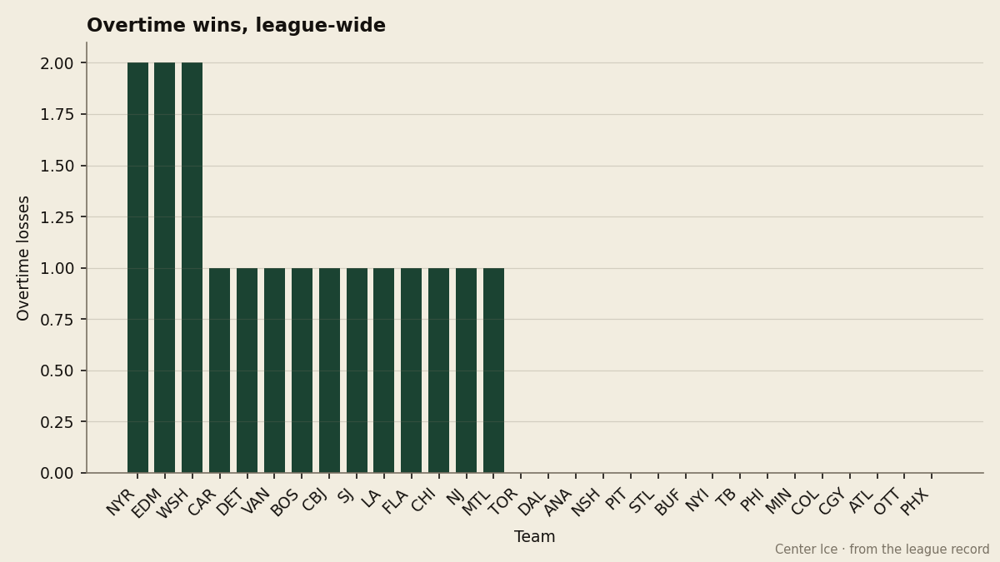
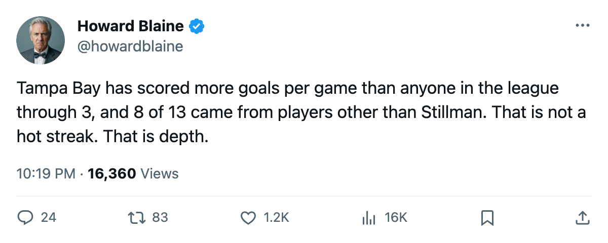
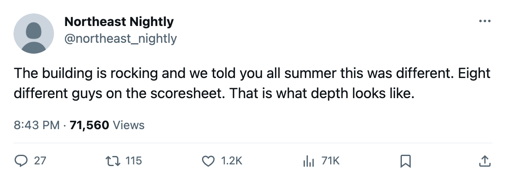

Tampa Bay at 3 and 0: The League's Best Offense Sits on the 11th Payroll and Fills the 6th-Busiest Building
Eight of Tampa Bay's 13 goals have come from players other than Cory Stillman, and 2 of the 3 wins needed overtime
 Howard BlaineSenior writer, The Blaine Rankings · The Hockey Gazette
Howard BlaineSenior writer, The Blaine Rankings · The Hockey Gazette
Tampa Bay has outscored its opponents 13-6 through 3 games, and 8 of those 13 goals belong to players other than  Cory Stillman82.
Cory Stillman82.
At 4.33 goals per game, the  Tampa Bay Lightning are the highest-scoring club in the league at this point in the season.
Tampa Bay Lightning are the highest-scoring club in the league at this point in the season.  Buffalo Sabres are second at 4.00 through 4 games, and the defending champion
Buffalo Sabres are second at 4.00 through 4 games, and the defending champion  Toronto Maple Leafs sit at 3.83 over 6. Tampa Bay's +7 goal differential trails only Toronto's +13 in absolute terms, and Toronto has played 2 more games.
Toronto Maple Leafs sit at 3.83 over 6. Tampa Bay's +7 goal differential trails only Toronto's +13 in absolute terms, and Toronto has played 2 more games.
What separates the Lightning from the rest of the early-season field is the spread behind their scoring. Stillman has 5 goals and 1 assist for 6 points in 3 games, and his 26.3 minutes a night are the highest on the league's scoring list. The remaining 8 goals have come from the rest of the lineup.

Two overtime wins in three games
The margins have been tighter than the goal totals suggest. Tampa Bay opened with a 4-3 road win at  Florida Panthers on October 10, took
Florida Panthers on October 10, took  Carolina Hurricanes 3-2 in overtime at home on October 12, and beat
Carolina Hurricanes 3-2 in overtime at home on October 12, and beat  Atlanta Thrashers 6-1 on October 18. Two of the three came in extra time. No other club in the league has more than 1 overtime win through the first week; the champion Toronto Maple Leafs have yet to win one.
Atlanta Thrashers 6-1 on October 18. Two of the three came in extra time. No other club in the league has more than 1 overtime win through the first week; the champion Toronto Maple Leafs have yet to win one.
Two overtime wins carry 4 of Tampa Bay's 6 points. The 6-1 rout of Atlanta is the only game in which Tampa Bay was never inside one goal of its opponent. The other two were decided by the final goal in a tied game.
An overtime win counts the same as a regulation one, and the offensive output is real. But the closeness of these contests means the early scoring rate may settle toward the mean.
The cost of 6 points
Tampa Bay's payroll is $59.79M, the 11th highest in the league. At 6 points, that works to $9.96M per point, which places the Lightning 8th on the cost-per-point list behind  Dallas Stars at $7.25M,
Dallas Stars at $7.25M,  Pittsburgh Penguins at $8.15M,
Pittsburgh Penguins at $8.15M,  Nashville Predators at $8.56M,
Nashville Predators at $8.56M,  Mighty Ducks of Anaheim at $8.94M, Toronto at $8.99M,
Mighty Ducks of Anaheim at $8.94M, Toronto at $8.99M,  Vancouver Canucks at $9.27M and Buffalo Sabres at $9.56M.
Vancouver Canucks at $9.27M and Buffalo Sabres at $9.56M.
The business figures around the club tell the same story as the payroll: a franchise that operates in the middle of the league's spending column and at the top of its gate. Tampa Bay draws 16398 per game, the 6th-highest attendance figure in the league, at a ticket price of $81. Revenue runs $28.92M and profit runs $19.03M. Prestige points sit at 1008, the 3rd-highest in the league behind Toronto's 1100 and  New Jersey Devils's 1064.
New Jersey Devils's 1064.
| metric | Tampa Bay | league rank |
|---|---|---|
| Payroll | $59.79M | 11th |
| Cost per point | $9.96M | 8th |
| Attendance | 16398 | 6th |
| Revenue | $28.92M | 24th |
| Profit | $19.03M | 14th |
| Prestige points | 1008 | 3rd |
The total sits 4 below Toronto Maple Leafs's league-best mark and 56 above the 4th-place club, and it reflects 2 trips to the second round in Tampa Bay's history and a 10-game postseason run last spring. This is a franchise whose standing in the league runs ahead of what the payroll reflects.
What the record from last spring says
Tampa Bay played 10 postseason games last year and won 3, finishing its run in the second round. The club scored 20 goals and allowed 26 in that stretch, a minus-6 differential against the plus-7 it has carried through the first week of this one.
That contrast is the one worth watching. A club that was outscored in the spring and is outscoring everyone now is either improved or has been lucky, and 3 games do not tell you which. Stillman's 6 points in 3 games pace to 164 over a full 82, a number he has never approached in a single season. The center behind him and the defenseman with 5 assists have played well above their established output, and the record does not carry enough history to know whether that is a change in usage or a cold streak waiting to arrive.
The first week establishes that Tampa Bay's offense is not one man. Eight of 13 goals belong to other names on the scoresheet. The building is full, the payroll is manageable, and the cost per point puts this club ahead of teams spending $20M more.
Whether the 4.33 holds past November is the question for December.

